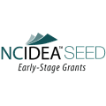
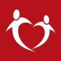

A new approach
towards living -
Utopia
Our goal is to obtain and create a place
where all people without exception get
equal socio-economic rights using the
concept of resource based economy for
the betterment of society.
Learn More
Who are we? - About Us
The Venus Project is an organization that
proposes a feasible plan of action for social
change, one that works towards a peaceful and
sustainable global civilization. It outlines an
alternative to strive toward where human rights
are no longer paper proclamations but a way of
life.
We propose a fresh, holistic approach - one that
is dedicated to human and environmental
concerns. It is an attainable vision of a bright
and better future, one that is appropriate to the
times in which we live, and both practical and
feasible for a positive future for all the people
of the world.
Supported by
- 
- 
Resource based economy
Global problems faced by humanity today are
impacting individuals and nations rapidly.
Climate change, famine, war, epidemics of
deadly diseases and environmental pollution
contribute to the long list of global challenges
we, as humans, need to promptly address before
an eventual catastrophe swiftly becomes
inevitable.
We are separated by borders and beliefs which
make it impossible for us to arrive at relevant
solutions while being divided ideologically. Most
of our problems today are technical but we are
still looking for solutions through political
means. We need to accept that eliminating
these global threats requires the employment of
methodologies rather than personal opinions.